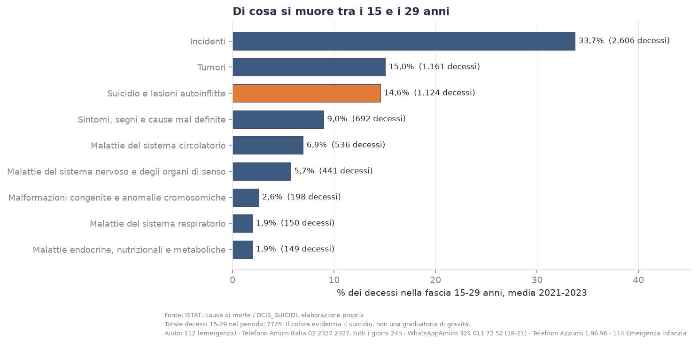
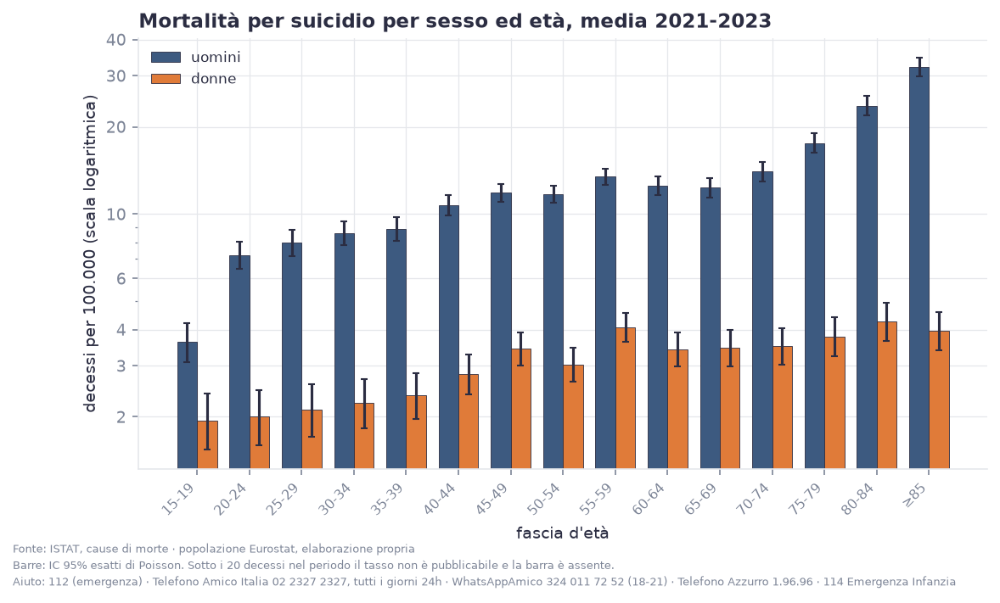
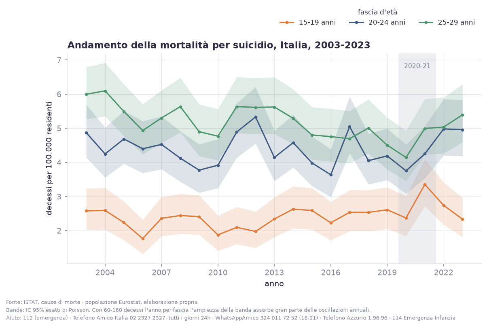
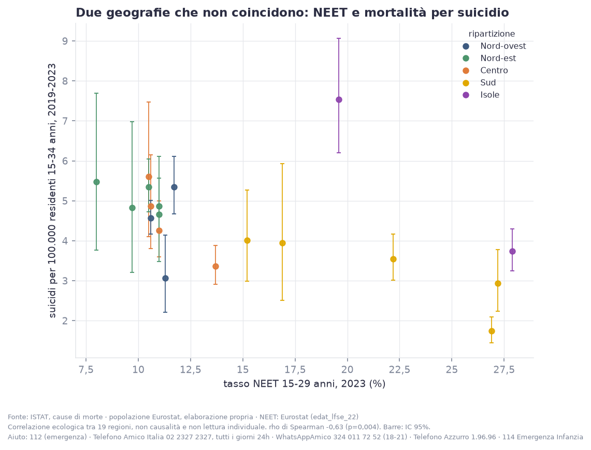
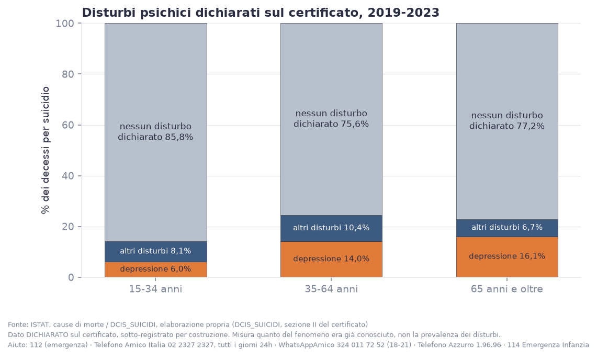
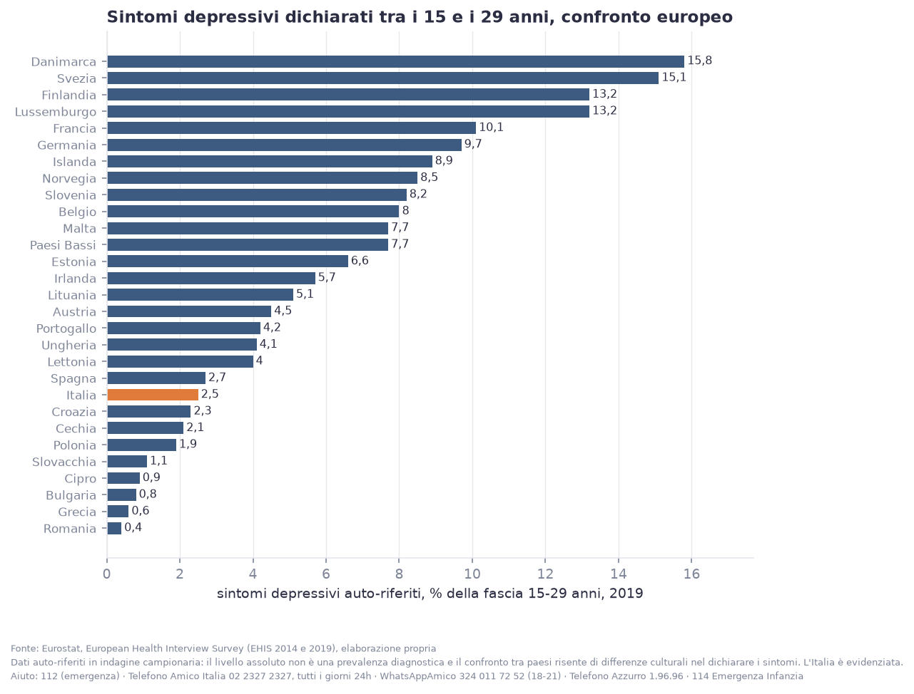
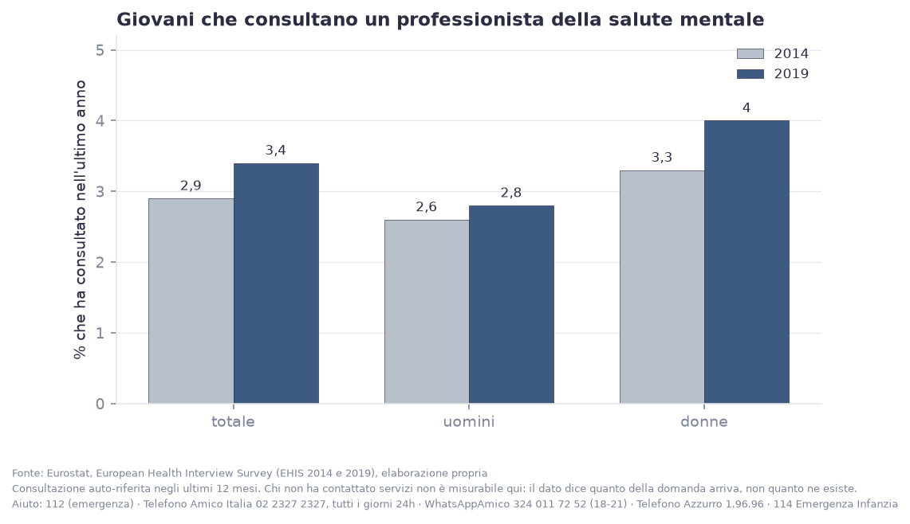
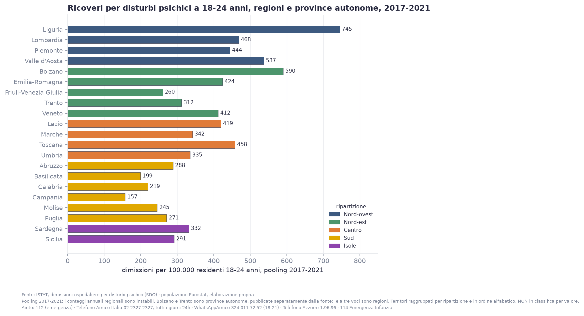
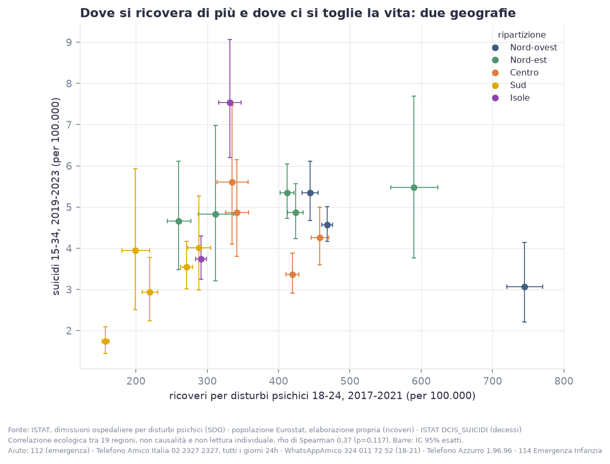

Premessa
Ogni anno, in Italia, muoiono per suicidio circa 358 persone tra i 15 e i 29 anni. Sono i numeri ufficiali ISTAT, e sono il punto di partenza di questo documento. Attorno a quei decessi c’è una salute mentale giovanile che le statistiche ufficiali raccontano per pezzi: sintomi dichiarati, contatti con i professionisti, ricoveri. Questa analisi mette i pezzi accanto, senza sommarli. Una misura onesta è il modo più rispettoso di parlare di questo tema.
Il suicidio è la terza causa di morte tra i 15 e i 29 anni
Nel 2021-2023 il suicidio ha causato 1.124 decessi nella fascia 15-29 anni: il 14,6% di tutte le morti di questa età. Solo gli incidenti e i tumori fanno di più. Se si tolgono gli incidenti, il suicidio è la seconda causa di morte di una generazione.
Parliamo di una delle principali cause di morte per un ragazzo o una ragazza di 15-29 anni in Italia.

Muoiono soprattutto i ragazzi
Il tasso maschile è 6,3 per 100.000, quello femminile 2,0: un rapporto di 3,1 a 1. Il divario però non è costante: a 15-19 anni è di 1,9 a 1, a 25-29 sale a 3,8 a 1.

Dopo il 2020 cambia il profilo delle ragazze
Sui vent’anni di dati disponibili (2003-2023) il trend generale della fascia 15-29 è leggermente in calo. Il test statistico su una rottura dopo il 2020, sull’intera fascia, non è significativo. Ma il quadro si scompone: tra le donne 15-29 il livello dopo il 2020 è aumentato in modo statisticamente significativo (RR 1.23, p=0.021), tra gli uomini no; e nella fascia 15-19 il trend di lungo periodo è in crescita (+0,9% l’anno).
Nessuno sta dicendo che la pandemia ha causato i suicidi. Il periodo va letto separatamente per età e per sesso. I numeri delle ragazze sono più piccoli e più incerti, e la media nazionale li nasconde: vanno guardati a parte.

Una geografia che sorprende
Il suicidio giovanile in Italia non segue la geografia del disagio economico. Il tasso a 15-34 anni è più alto al Nord (1,5 volte quello del Sud e delle Isole), e le estremità sono la Sardegna (7,5 per 100.000) e la Campania (1,7). Confrontando regione per regione il tasso di suicidio giovanile con il tasso di giovani che non studiano e non lavorano (NEET), la correlazione è negativa (rho -0.63).

Le cause sono più d’una e non tutte economiche. La Sardegna, storicamente, ha uno dei tassi di suicidio più alti d’Europa a tutte le età; la Campania uno dei più bassi. Una spiegazione unica (disoccupazione, social, pandemia) semplifica un fenomeno che i dati mostrano molteplice.
Quanto del fenomeno attraversa i servizi di salute mentale
Nei certificati di morte, una quota dei decessi per suicidio riporta un disturbo psichico già noto: 12,6% tra i 15 e i 34 anni, di cui 6,0% depressione. È una quota sottostimata, perché dipende da quanto il medico certificatore registra, ed è più bassa tra i giovani che tra gli anziani proprio perché le storie cliniche brevi si documentano meno.
Ma anche letta con prudenza dice una cosa concreta: una parte misurabile di chi muore per suicidio era già in contatto con i servizi. È lì che la prevenzione può arrivare prima.

Il disagio che i giovani dichiarano
Dall’indagine europea sulla salute (EHIS), nel 2019 il 2,5% dei 15-29 anni in Italia dichiara sintomi depressivi nelle ultime due settimane (3,0% tra le donne, 2,0% tra gli uomini). Nel 2014 era l’1,8%. Non è una diagnosi: è quello che le persone dicono di provare. Nel confronto europeo l’Italia è tra i paesi con la quota più bassa, 9ª su 29 dal basso, ma il confronto risente anche di differenze culturali nel raccontare i sintomi.

Quanti arrivano ai professionisti
Nello stesso periodo, il 3,4% dei 15-29 anni ha consultato uno psicologo, uno psicoterapeuta o uno psichiatra negli ultimi 12 mesi: il 4,0% tra le donne, il 2,8% tra gli uomini. Nel 2014 era il 2,9%. Il dato dice quanta domanda arriva ai servizi, non quanta ne esiste: chi non li raggiunge non compare.

Dove si viene ricoverati per disturbi psichici
Le dimissioni ospedaliere per disturbi psichici nella fascia 18-24, la più giovane disponibile, sono 391 per 100.000 nel 2021, in calo dal 2005 (416). Tra le regioni il divario è di oltre quattro volte: dalla Campania (157) alla Liguria (745). Confrontando regione per regione i ricoveri con i suicidi, il legame è debole e non si distingue dal caso (rho +0.37, p=0.117): il ricovero dipende anche da come i servizi sono organizzati, non solo dal bisogno.


Il conteggio è più solido di quanto si creda, ma resta un minimo
Gli eventi classificati come “intento indeterminato”, la voce in cui finiscono i suicidi non riconosciuti come tali, in Italia sono pochissimi: lo 0,15% dei suicidi a tutte le età. In altri paesi questa voce arriva a quote a doppia cifra. Il conteggio ufficiale italiano è quindi relativamente affidabile, e resta comunque un valore minimo.
Nel confronto europeo l’Italia è tra i paesi con i tassi più bassi
Secondo le stime OMS, nel 2021 l’Italia è al 4° posto dal basso su 31 paesi europei per tasso di suicidio a 15-29 anni: è nella parte bassa della classifica. È il contesto corretto per leggere i numeri italiani, e spiega perché copiare soluzioni da paesi con profili molto diversi funzioni raramente.
Cosa serve leggere accanto a questi numeri
Questi dati contano i decessi, i sintomi dichiarati e i contatti con i servizi. Restano fuori i tentativi di suicidio e tutto il disagio che non arriva a nessun servizio, ed è la parte più larga del fenomeno. Le due fotografie europee del 2014 e del 2019 e la serie dei ricoveri ferma al 2021 dicono anche un’altra cosa: in Italia manca una sorveglianza continua del malessere psicologico giovanile. Misurarlo meglio è il primo passo per rispondere meglio.
Se tu o qualcuno che conosci è in difficoltà, non restare solo/a:
- 112, numero unico di emergenza (o 118), in caso di pericolo immediato
- Telefono Amico Italia, 02 2327 2327, tutti i giorni 24 ore su 24
- WhatsApp Amico, 324 011 72 52, tutti i giorni 18-21
- Mail Amica (mail@mica), counselling via email, su telefonoamico.it
- Telefono Azzurro, 1.96.96 e 114 Emergenza Infanzia, per bambini e adolescenti
- Telefono Verde Alcol (ISS), 800 632 000
In Italia non esiste un numero unico nazionale dedicato all’emergenza suicidaria. È un’informazione sulle politiche di prevenzione, utile a chi legge.